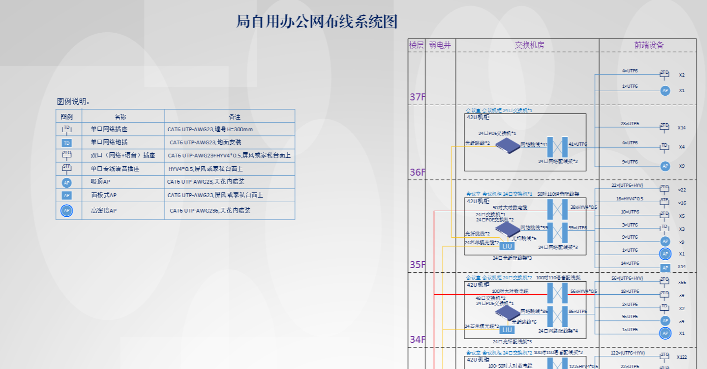
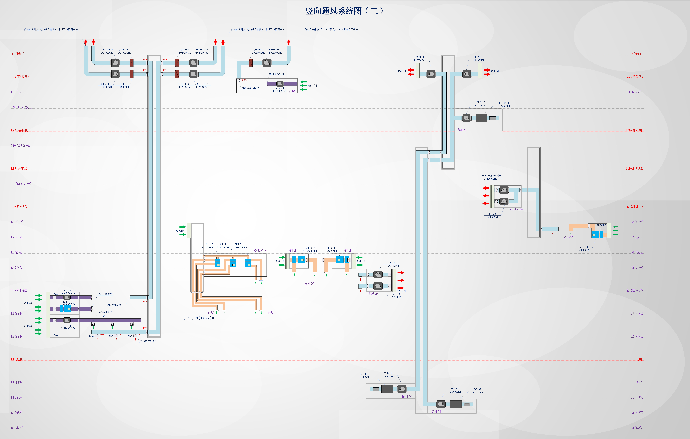
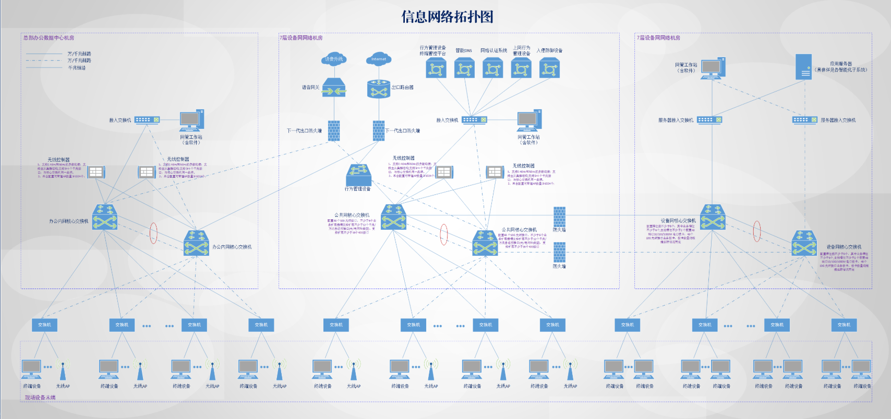

中建厦门金山财富中心
中建四局智能运营管理系统（CFIBMS）
基本信息
- 用户名:
- test
- 姓名:
- 管理员
- 手机号:
- 18705183442


BUILDING DIGITAL TWIN · LIVE SCENE
中建科创



| 闸机口 | 进出状态 | 进出时间 | 车牌号 | 用户类型 | 停车费 |
|---|---|---|---|---|---|
| 西侧入口道闸 | 入场 | 2026-09-04 08:20:16 至 2026-09-04 08:45:10 | 闽D A8623 | 月租用户 | ¥0.00 |
| 南侧入口道闸 | 入场 | 2026-09-04 08:35:42 至 2026-09-04 09:02:18 | 闽D P1208 | 临时用户 | ¥0.00 |
| 西侧出口道闸 | 出场 | 2026-09-04 09:05:31 至 2026-09-04 09:05:31 | 闽D 7K526 | 访客用户 | ¥8.00 |
| 南侧出口道闸 | 出场 | 2026-09-04 09:18:09 至 2026-09-04 09:18:09 | 闽D C9916 | 临时用户 | ¥6.00 |
| 西侧入口道闸 | 入场 | 2026-09-04 09:42:53 至 2026-09-04 10:06:27 | 闽D J6210 | 月租用户 | ¥0.00 |

| 序号 | 姓名 | 通行方式 | 门禁设备 | 通行位置 | 通行时间 | 通行方向 | 操作 |
|---|---|---|---|---|---|---|---|
| 1 | 孙笑平 | 不分进出 | 34F-MK-18 | 3418 | 2025-01-09 15:46:42 | 成功 | |
| 2 | 孙笑平 | 不分进出 | 34F-MK-18 | 3418 | 2025-01-09 15:46:34 | 失败 | |
| 3 | 孙笑平 | 不分进出 | 34F-MK-18 | 3418 | 2025-01-09 15:46:29 | 成功 | |
| 4 | 保洁 | 不分进出 | 1F-高区电梯间闸机2通道 | 1F-高区电梯间2通道刷卡进 | 2025-01-09 15:46:12 | 成功 | |
| 5 | 保洁 | 不分进出 | 1F-高区电梯间闸机2通道 | 1F-高区电梯间2通道刷卡进 | 2025-01-09 15:46:11 | 失败 | |
| 6 | 保洁 | 不分进出 | 1F-高区电梯间闸机2通道 | 1F-高区电梯间2通道刷卡进 | 2025-01-09 15:46:08 | 成功 | |
| 7 | - | 不分进出 | B2F-MJKZ-01 | B2层生活水泵房东南侧-消防门5号 | 2025-01-09 15:44:44 | 失败 | |
| 8 | - | 不分进出 | B2F-MJKZ-01 | B2层生活水泵房东南侧-消防门5号 | 2025-01-09 15:44:44 | 成功 | |
| 9 | 施怡返 | 不分进出 | 1F-高区电梯间闸机2通道 | 1F-高区电梯间2通道刷卡进 | 2025-01-09 15:44:32 | 成功 | |
| 10 | 廖艳文 | 不分进出 | 33F-MK-02 | 3302 | 2025-01-09 15:42:42 | 失败 |

是否确认该报警为误报
是否确认将该报警转为工单
确认退出当前账号
弱电系统按系统总览、会议办公、智慧停车、综合安防和信息网络展示设备、空间、通行、视频、网络及报警信息。
可视化大屏 -> 弱电系统
| 字段名称 | 数据来源 |
|---|---|
| 子系统设备总数 | 后台-设备管理-设备台账，按弱电系统分类汇总。 |
| 在线/离线设备 | IoT平台设备连接状态。 |
| 系统报警 | 后台-报警信息，按弱电子系统和楼层过滤。 |
| 系统视频 | 视频监控平台摄像机流及摄像机台账。 |
| 字段名称 | 数据来源 |
|---|---|
| 会议室总数 | 后台-房源管理-空间类型为会议室的房源数量。 |
| 会议室使用状态 | 第三方会议预约系统当前预约及签到状态。 |
| 会议室使用趋势 | 第三方会议预约系统按时间点统计已使用会议室数。 |
| 会议室使用频率排行 | 第三方会议预约系统按会议次数聚合，支持今日、本周、本月、本年。 |
| 会议室使用时长排行 | 第三方会议预约系统按预约时长聚合。 |
| 会议室设备 | 后台-设备管理中所属房间为会议室的设备台账及IoT状态。 |
| 会议办公设备报警 | 后台-报警信息中会议办公系统报警记录。 |
| 字段名称 | 数据来源 |
|---|---|
| 车位总数 | 第三方智慧停车系统车位台账。 |
| 剩余车位 | 第三方智慧停车系统实时车位状态。 |
| 入场数/出场数 | 第三方智慧停车系统车辆进出场记录，按统计周期汇总。 |
| 车位占用率 | 剩余车位、使用中车位与车位总数计算。 |
| 停车视频 | 视频监控平台停车场摄像机实时视频流。 |
| 停车记录 | 第三方智慧停车系统车辆记录，支持车牌、开始时间、结束时间筛选。 |
| 字段名称 | 数据来源 |
|---|---|
| 安防设备总数 | 后台-设备管理中综合安防分类设备台账。 |
| 在线设备/在线率 | IoT平台及视频监控、门禁平台在线状态。 |
| 离线设备/故障率 | 平台设备状态及后台报警信息计算。 |
| 系统告警/联动记录 | 综合安防平台告警及联动事件记录。 |
| 关键区域视频 | 视频监控平台配置的重点区域摄像机视频流。 |
| 全局监控 | 视频监控平台摄像机列表及实时流。 |
| 字段名称 | 数据来源 |
|---|---|
| 网络类型 | 网络管理平台设备网/公网配置。 |
| 设备分类 | 网络管理平台及后台-设备分类，统计防火墙、交换机、WAC等数量。 |
| 设备运行状态 | 网络管理平台设备在线、离线状态。 |
| 机房环境 | IoT平台机房温度、湿度及环境传感器数据。 |
| 网络拓扑 | 网络管理平台拓扑节点、链路及设备关系。 |
| 网络报警 | 后台-报警信息及网络管理平台告警记录。 |